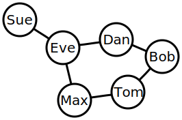

ONLY A DRAFT.. (Yet public)
(I'm still new at this)Graph Traversal in JavaScript
What is a graph?
To use a simplistic definition that suites the purpose of this post- A graph is common data structure where nodes can be connected to one or many other nodes. This could probably best be understood with an example. Take for example LinkedIn. Bob works at Acme together with Tom. Bob connects with Tom on LinkedIn. They now have an equal relationship- Tom is connected to Bob just like Bob is connected to Tom. Additionally Bob connects to his old college roommate Dan who works at ShopRite. Dan, however has never met Tom and they have no connection. Tom starts getting into it, and connects with his coworker at ShopRite, Max. Max already has a connection to his old girlfriend Eve. Eve, happens to be Dan's cousin and is connected to him. Eve is also connected to her former roomate Sue.
If that sounds complex it can more easily visualized like in the graph above.
What does it mean to traverse?
One implementation
function traverseGraph(firstNodeId, allNodes){
//keeps tracks of nodes that
//we have already traversed
var visitedIds = [];
//initialize the queue with the
//first node we are going to traverse
var queue = allNodes[firstNodeId].associated;
while(queue && queue.length > 0){
//loop until we've traversed the
//whole double booked graph
//take the first item out of our queue
var nodeId = queue.shift();
//have we NOT gone down this route already
if(visitedIds.indexOf(nodeId) < 0){
//we are now going down it-
//so add it to the list of visited
visitedIds.push(nodeId);
//get the next node associated ids
var nextIds = allNodes[nodeId].associated;
var len = nextIds.length;
//continue to traverse the graph by adding
//to queue more node ids if needed
//loop through this nodes associated nodes
for(var i = 0; i < len; i++){
var nextId = nextIds[i];
//have we NOT gone down this route already
//and not already in the queue
if(visitedIds.indexOf(nextId) < 0
&& queue.indexOf(nextId) < 0){
//add it to the queue
queue.push(nextId);
}
}
}
}
//list of all the nodes
//that we've been to already
return visitedIds;
}